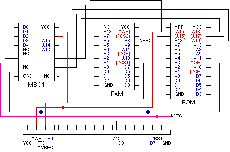
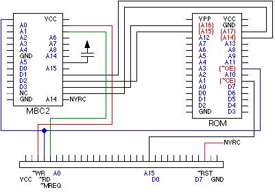
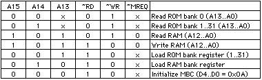
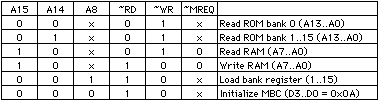

Here is how the Gameboy cartridges look like internally (two different types of cartridges):


Memory bank controllers (MBCs) allow to switch banks and control back-up RAM.
MBCs contain registers (5 bits for MBC1, 4 bits for MBC2) in which you load the value of a memory bank before accessing it.
MBC1 can control up to 4 Mbits (32 banks * 128 kbits) together with RAM. Games which need more RAM that the limited internal RAM use MBC1. External RAM is generally backed-up with a battery.
MBC2 has 512 * 4 bit of internal memory used as back-up memory. It is accessed using A8..A0 and D3..D0.
MBC1 is controlled by the A15..A13 address lines, MBC2 by A15,A14,A8. Banks are written in D0..D4 (D0..D3 for MBC2). When controlling both RAM and ROM, ROM is selected when A15 is low (addresses 0x0000 to 0x7FFF).
The back-up memory is preserved by a 3V lithium battery together with a NV-RAM controller.
The ~MREQ line is low each time the processor makes a memory access (e.g. with the LD operation), but not when it fetches instructions.
Here are the different operations which can be performed with MBCs.


If you have have any question or remark, e-mail at felber@di.epfl.ch .